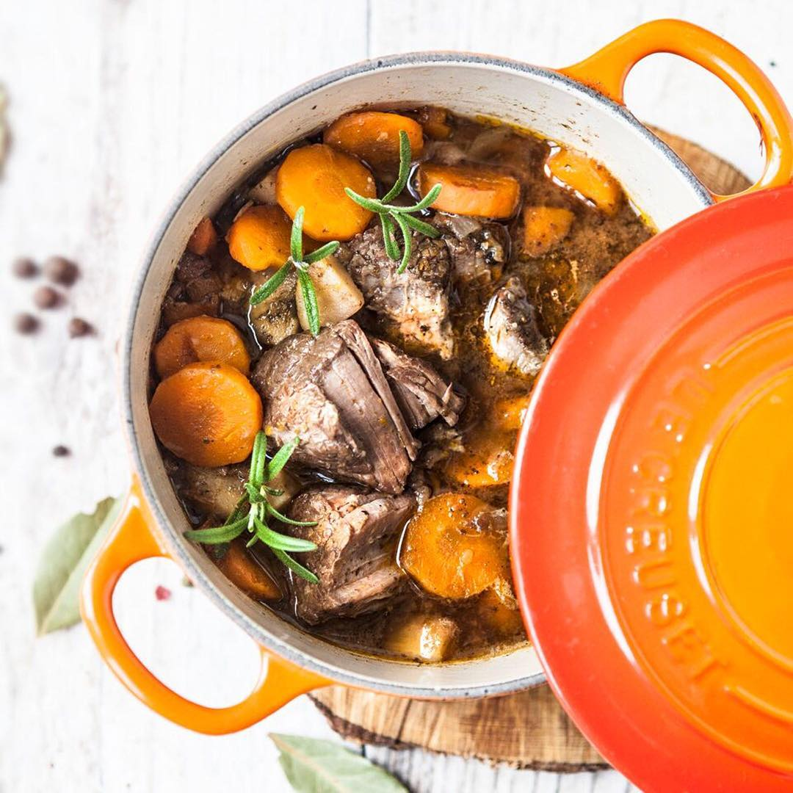

Hovädzie na víne podľa @maggiczsk — Normy Jedál
Když to červené víno začne péct s hovězím, vznikne zázrak z jednoho hrnce! #dusenehovezi #hovezi #hovezinavine #vino #cervenevino #wine #hovadzie #dusenehovadzie #hovadzienavine #stew #beef #beefandwine #recept #tochces #dnesjim #dnesjem #mnam #dobrota #dobrouchut #zacnetevarit #zacnitevarit #food #foodporn #foodie #instafood #lovefood #foodstagram #tasty #dobruchut